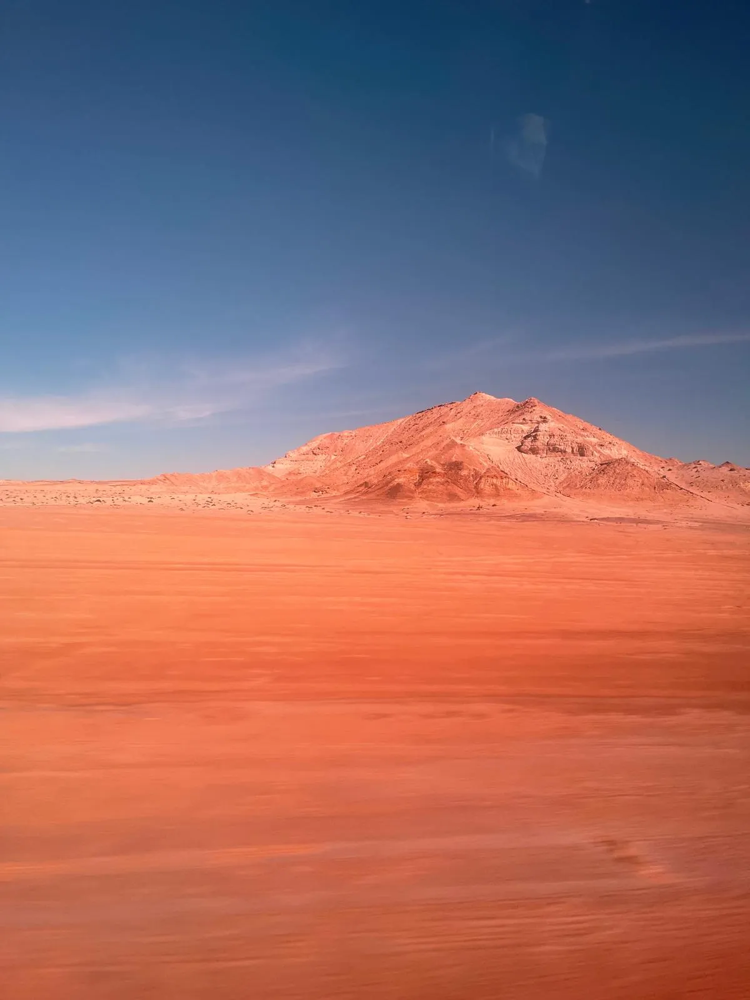
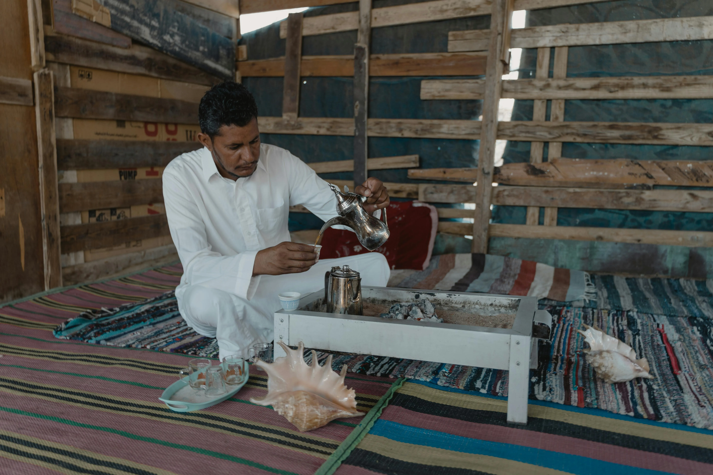

📍 Résidence West Point · Foum El Bouir, Dakhla📍 West Point Residence · Foum El Bouir, Dakhla📍 Residencia West Point · Foum El Bouir, Dakhla📍 Residência West Point · Foum El Bouir, Dakhla📍 Residenza West Point · Foum El Bouir, Dakhla
Foum El Bouircôté AtlantiqueFoum El BouirAtlantic SideFoum El Bouirlado AtlánticoFoum El Bouirlado AtlânticoFoum El Bouirlato Atlantico
Votre guide d'expériences · Dakhla, Sahara Atlantique Your experience guide · Dakhla, Atlantic Sahara Tu guía de experiencias · Dakhla, Sáhara Atlántico O vosso guia de experiências · Dakhla, Saara Atlântico La vostra guida d'esperienze · Dakhla, Sahara Atlantico
Glisse · Désert · GastronomieGliding · Desert · GastronomyDeslizamiento · Desierto · GastronomíaDeslize · Deserto · GastronomiaScivolo · Deserto · Gastronomia
Là où l'Atlantique rencontre le Sahara.Where the Atlantic meets the Sahara.Donde el Atlántico se encuentra con el Sáhara.Onde o Atlântico encontra o Saara.Dove l'Atlantico incontra il Sahara.
Quel est votre profil ? What's your profile? ¿Cuál es tu perfil? Qual é o seu perfil? Qual è il tuo profilo?

Surf · Foum El BouirSurf · Foum El BouirSurf · Foum El BouirSurf · Foum El BouirSurf · Foum El Bouir
Vagues atlantiques,
droite mythiqueAtlantic waves,
mythical right-handerOlas atlánticas,
derecha míticaOndas atlânticas,
direita míticaOnde atlantiche,
diritto mitico
Site officiel GKA Kitesurf World Cup depuis 2009. Accès direct depuis la résidence — la droite atlantique, les barrels d'hiver, le point break de classe mondiale.Official GKA Kitesurf World Cup venue since 2009. Direct access from the residence — the Atlantic right-hander, winter barrels, world-class point break.Sede oficial GKA World Cup desde 2009. Acceso directo desde la residencia — derecha atlántica, barrels invernales, point break de clase mundial.Sede oficial GKA World Cup desde 2009. Acesso direto desde a residência — a direita atlântica, barrels de inverno, point break de classe mundial.Sede ufficiale GKA World Cup dal 2009. Accesso diretto dalla residenza — diritto atlantico, barrel invernali, point break di classe mondiale.

Kitesurf · Lagune · PK 25Kitesurf · Lagoon · PK 25Kitesurf · Laguna · PK 25Kitesurf · Lagoa · PK 25Kitesurf · Laguna · PK 25
Eaux turquoise,
300 jours de ventTurquoise waters,
300 days of windAguas turquesas,
300 días de vientoÁguas turquesa,
300 dias de ventoAcque turchesi,
300 giorni di vento
Plan d'eau protégé, vent constant, fond plat — le paradis du kitesurf et du wingfoil. Île du Dragon, flamants roses, Dune Blanche à portée de bateau.Sheltered flat water, constant wind — paradise for kitesurf and wingfoil. Dragon Island, pink flamingos, White Dune within reach by boat.Agua plana protegida, viento constante — paraíso del kitesurf y wingfoil. Isla del Dragón, flamencos, Duna Blanca en barco.Água plana protegida, vento constante — paraíso do kitesurf e wingfoil. Ilha do Dragão, flamingos, Duna Branca de barco.Acqua piatta riparata, vento costante — paradiso per kitesurf e wingfoil. Isola del Drago, fenicotteri, Duna Bianca in barca.

Désert · Sahara AtlantiqueDesert · Atlantic SaharaDesierto · Sáhara AtlánticoDeserto · Saara AtlânticoDeserto · Sahara Atlantico
Dunes &
couchers de soleilDunes &
sunsetsDunas &
atardeceresDunas &
pôres do solDune &
tramonti
Quad sur les crêtes, Dune Blanche à l'aube, bivouac sous les étoiles — le Sahara atlantique à quelques kilomètres de la résidence.Quad on the ridgelines, White Dune at dawn, bivouac under the stars — the Atlantic Sahara just a few kilometres from the residence.Quad en las crestas, Duna Blanca al alba, bivouac bajo las estrellas — el Sáhara atlántico a pocos kilómetros de la residencia.Quad nas cristas, Duna Branca ao amanhecer, bivaque sob as estrelas — o Saara atlântico a poucos quilómetros da residência.Quad sulle creste, Duna Bianca all'alba, bivacco sotto le stelle — il Sahara atlantico a pochi chilometri dalla residenza.

Gastronomie · Vie localeGastronomy · Local lifeGastronomía · Vida localGastronomia · Vida localGastronomia · Vita locale
Poisson frais &
couchers de soleilFresh fish &
sunsetsPescado fresco &
atardeceresPeixe fresco &
pôres do solPesce fresco &
tramonti
Les adresses que les locaux se passent de bouche à oreille — fruits de mer ultra-frais, huîtres de la lagune, couchers de soleil face à l'Atlantique.The addresses locals whisper — ultra-fresh seafood, lagoon oysters, sunsets facing the Atlantic.Los restaurantes que los locales recomiendan — mariscos frescos, ostras de la laguna, atardeceres frente al Atlántico.Os endereços que os locais recomendam — marisco fresco, ostras da lagoa, pôres do sol frente ao Atlântico.Gli indirizzi che i locali consigliano — frutti di mare freschissimi, ostriche della laguna, tramonti sull'Atlantico.
- Westpoint Pescador Fruits de mer ultra-frais, coucher de soleil face au point break.Ultra-fresh seafood, sunset facing the point break.Mariscos frescos, atardecer frente al point break.Marisco ultrafesco, pôr do sol face ao point break.Frutti di mare freschissimi, tramonto sul point break.
- Bavaro Beach Dakhla Poisson frais, terrasse en bord de plage, lumière du soir.Fresh fish, beach terrace, evening light.Pescado fresco, terraza en la playa, luz del atardecer.Peixe fresco, esplanada na praia, luz do entardecer.Pesce fresco, terrazza in spiaggia, luce serale.
- Casa Luis Menus dès 80 MAD, recettes traditionnelles — l'adresse locale par excellence.Set menus from 80 MAD, traditional recipes — the local address par excellence.Menús desde 80 MAD, recetas tradicionales — la dirección local por excelencia.Menus a partir de 80 MAD, receitas tradicionais.Menu da 80 MAD, ricette tradizionali.
- Beach Bar · Dakhla Attitude Mojitos après session, DJ sunset 2× par semaine.Post-session mojitos, DJ sunset twice a week.Mojitos post-sesión, DJ sunset dos veces por semana.Mojitos pós-sessão, DJ sunset 2× por semana.Mojito dopo sessione, DJ sunset 2× a settimana.
- Palais Rhoul · Table du Pêcheur Poisson de leur propre bateau, charbon de bois — la grande table de Dakhla.Fish from their own boat, charcoal — the great table of Dakhla.Pescado de su propio barco, carbón — la gran mesa de Dakhla.Peixe do próprio barco, carvão — a grande mesa de Dakhla.Pesce dalla propria barca, carbone — la grande tavola di Dakhla.
- Parc à Huîtres de Dakhla Huîtres élevées dans les eaux froides de la lagune — à faire à chaque visite.Oysters grown in the lagoon's cool waters — a must on every visit.Ostras criadas en las aguas frías de la laguna — imprescindible.Ostras nas águas frias da lagoa — a fazer em cada visita.Ostriche nelle acque fredde della laguna — da fare ad ogni visita.